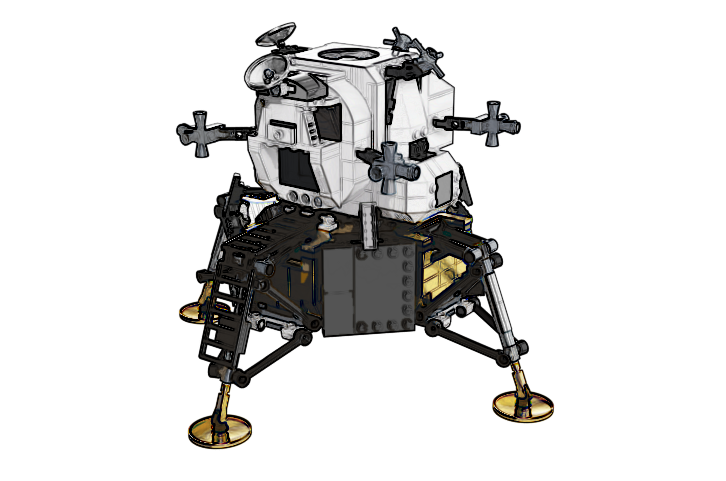

Landing on Europa¶
{kind=link}
Background story¶
The first and only spacecraft to orbit Jupiter was NASA’s Galileo spacecraft, which launched on October 18, 1989. It arrived at Jupiter on December 8, 1995 after 2,242 days of flight time. NASA’s Pioneer 10, Pioneer 11 and Voyager 1 and 2 did the journey in ~600 days.
However, these spacecrafts were just flying by, none of them went into orbit around Jupiter or any of its moons. And now, more than 30 years later after Galileo, Project Armstrong’s spacecraft tries to reach Europa in just 505 days and land on its surface. With the latest rocket engine developments approaching Europa in ~500 days is not a problem. However, slowing down after entering its gravitational field and landing on it is not an easy task.
Mission¶
Your mission is to design and develop a bare metal application in C to control the descent propulsion system of ELM (Europa Lunar Module).
{kind=link}
The application receives data about the surface relief and the target landing point(s). Also receives ELM’s current speed, current position and current direction. Based on these inputs it commands the ELM to switch on or off the propulsion systems. This way the ELM can speed up, slow down or it can even change its direction. Like in the Moonlander game.
In order to start the mission as soon as possible the spacecraft was launched before the firmware responsible for controlling the landing gears was complete. Your team must develop a new firmware and update the spacecraft’s control system before the landing date: 15 April 2020. Upon uploading the new firmware the spacecraft’s control system will execute several landing zones related tests to validate the image. Some tests can be executed locally as well. See Python based landing simulator.
Several great developer teams are competing to build the firmware for ELM’s control system, but only the best solution will be accepted.
Will your team be the best? Are you ready for the challenge?
Copyright (c) 2020, Arm Limited. All rights reserved.